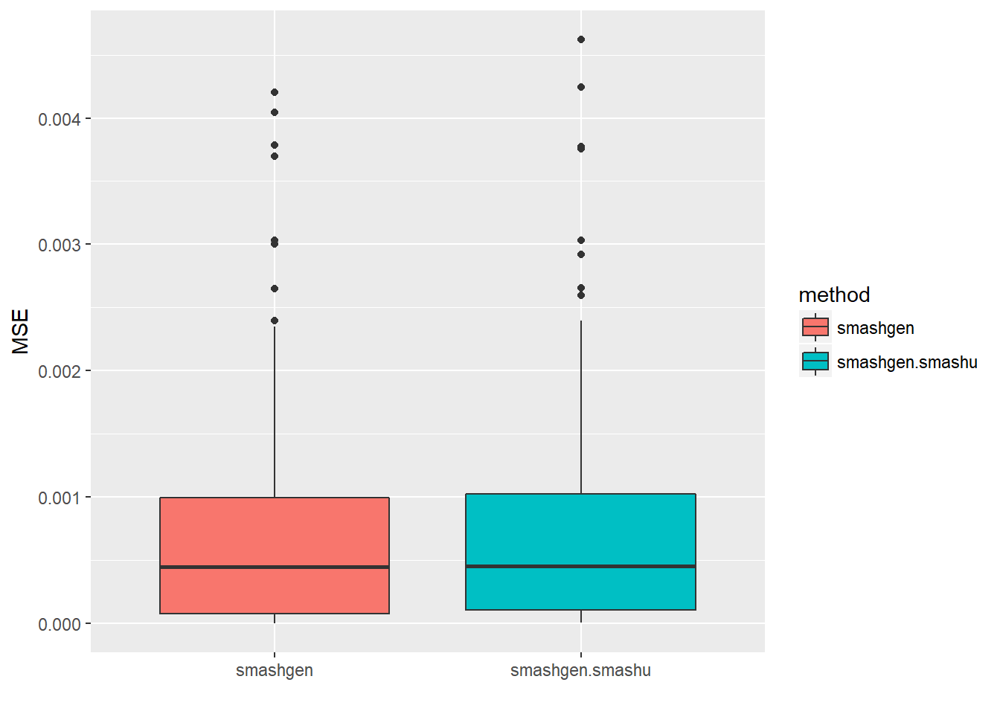
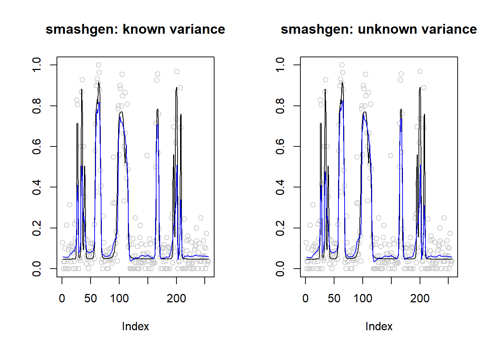

Last updated: 2018-05-17
workflowr checks: (Click a bullet for more information) ✔ R Markdown file: up-to-date
Great! Since the R Markdown file has been committed to the Git repository, you know the exact version of the code that produced these results.
✔ Environment: empty
Great job! The global environment was empty. Objects defined in the global environment can affect the analysis in your R Markdown file in unknown ways. For reproduciblity it’s best to always run the code in an empty environment.
✔ Seed:
set.seed(20180501)
The command set.seed(20180501) was run prior to running the code in the R Markdown file. Setting a seed ensures that any results that rely on randomness, e.g. subsampling or permutations, are reproducible.
✔ Session information: recorded
Great job! Recording the operating system, R version, and package versions is critical for reproducibility.
✔ Repository version: 3c0ccfd
wflow_publish or wflow_git_commit). workflowr only checks the R Markdown file, but you know if there are other scripts or data files that it depends on. Below is the status of the Git repository when the results were generated:
Ignored files:
Ignored: .Rhistory
Ignored: .Rproj.user/
Ignored: log/
Untracked files:
Untracked: analysis/binom.Rmd
Untracked: analysis/overdis.Rmd
Untracked: analysis/smashtutorial.Rmd
Untracked: docs/figure/smashtutorial.Rmd/
Unstaged changes:
Modified: analysis/ashpmean.Rmd
Modified: analysis/nugget.Rmd
Let \(X_t\) be a Binomial observation with number of trials \(n_t\), \(t=1,2,\dots,T\).
ash to binomial data \((X_t, n_t)\) and obtain the posterior mean \(\hat p=E(p|X,n)\), \(\hat p\in R^T\).smash.gaus to \(Y_t\) with standard deviation \(\sqrt(\sigma^2+s_t^2)\) if \(\sigma^2\) is known. If it’s unknown, then either \(\sigma^2\) or \(\sigma^2+s_t^2\) should be estimated first. The output of smash.gaus is denoted as \(\mu_t\).Methods for estimating \(\sigma^2\) or \(\sigma^2+s_t^2\) are discussed here.
library(smashrgen)
library(ggplot2)
simu_study=function(p,sigma,ntri,nsimu=100,seed=12345,
niter=1,family='DaubExPhase',ashp=TRUE,verbose=FALSE,robust=FALSE,
tol=1e-2){
set.seed(seed)
#smash.err=c()
smashgen.err=c()
smashgen.smashu.err=c()
#smashgen.mle.err=c()
n=length(p)
true.p=exp(p)/(1+exp(p))
for(k in 1:nsimu){
ng=rnorm(n,0,sigma)
m=exp(p+ng)
q=m/(1+m)
x=rbinom(n,ntri,q)
#fit data
#smash.out=smash.poiss(x)
smashgen.out=smash_gen(x,dist_family = 'binomial',sigma = sigma,ntri=ntri)
smashu.out=smash_gen(x,dist_family = 'binomial',y_var_est = 'smashu',ntri=ntri)
#mle.out=smash_gen(x,dist_family = 'poisson',y_var_est = 'mle')
#smash.err[k]=mse(exp(m),smash.out)
smashgen.err[k]=mse(true.p,smashgen.out)
smashgen.smashu.err[k]=mse(true.p,smashu.out)
#smashgen.mle.err[k]=mse(exp(m),mle.out)
}
return(list(est=list(smashgen.out=smashgen.out,smashu.out=smashu.out,x=x),err=data.frame(smashgen=smashgen.err, smashgen.smashu=smashgen.smashu.err)))
}p=rep(0,128)
set.seed(111)
ntri=rpois(128,30)
result=simu_study(p,0.1,ntri)
par(mfrow=c(1,2))
plot(result$est$x/ntri,col='gray80',ylab='',main='smashgen: known variance')
lines(exp(p)/(1+exp(p)),col=1)
lines(result$est$smashgen.out,col=4)
legend("topright", # places a legend at the appropriate place
c("truth","smashgen"), # puts text in the legend
lty=c(1,1), # gives the legend appropriate symbols (lines)
lwd=c(1,1),
cex = 1,
col=c("black","blue"))
plot(result$est$x/ntri,col='gray80',ylab='',main='smashgen: unknown variance')
lines(exp(p)/(1+exp(p)),col=1)
lines(result$est$smashu.out,col=4)
legend("topright", # places a legend at the appropriate place
c("truth","smashgen"), # puts text in the legend
lty=c(1,1), # gives the legend appropriate symbols (lines)
lwd=c(1,1),
cex = 1,
col=c("black","blue"))mean(result$err$smashgen)[1] 8.957221e-05mean(result$err$smashgen.smashu)[1] 9.913624e-05ggplot(df2gg(result$err),aes(x=method,y=MSE))+geom_boxplot(aes(fill=method))+labs(x='')result=simu_study(p,1,ntri)
par(mfrow=c(1,2))
plot(result$est$x/ntri,col='gray80',ylab='',main='smashgen: known variance')
lines(exp(p)/(1+exp(p)),col=1)
lines(result$est$smashgen.out,col=4)
plot(result$est$x/ntri,col='gray80',ylab='',main='smashgen: unknown variance')
lines(exp(p)/(1+exp(p)),col=1)
lines(result$est$smashu.out,col=4)mean(result$err$smashgen)[1] 0.0007841879mean(result$err$smashgen.smashu)[1] 0.0008206814ggplot(df2gg(result$err),aes(x=method,y=MSE))+geom_boxplot(aes(fill=method))+labs(x='')
p=rep(-3,128)
result=simu_study(p,1,ntri)
par(mfrow=c(1,2))
plot(result$est$x/ntri,col='gray80',ylab='',main='smashgen: known variance')
lines(exp(p)/(1+exp(p)),col=1)
lines(result$est$smashgen.out,col=4)
plot(result$est$x/ntri,col='gray80',ylab='',main='smashgen: unknown variance')
lines(exp(p)/(1+exp(p)),col=1)
lines(result$est$smashu.out,col=4)mean(result$err$smashgen)[1] 2.175465e-05mean(result$err$smashgen.smashu)[1] 2.726665e-05ggplot(df2gg(result$err),aes(x=method,y=MSE))+geom_boxplot(aes(fill=method))+labs(x='')p=c(rep(-2,128), rep(0, 128), rep(2, 128), rep(-2, 128))
set.seed(111)
ntri=rpois(512,30)
result=simu_study(p,0.1,ntri)
par(mfrow=c(1,2))
plot(result$est$x/ntri,col='gray80',ylab='',main='smashgen: known variance')
lines(exp(p)/(1+exp(p)),col=1)
lines(result$est$smashgen.out,col=4)
plot(result$est$x/ntri,col='gray80',ylab='',main='smashgen: unknown variance')
lines(exp(p)/(1+exp(p)),col=1)
lines(result$est$smashu.out,col=4)mean(result$err$smashgen)[1] 0.0003595882mean(result$err$smashgen.smashu)[1] 0.0004350061ggplot(df2gg(result$err),aes(x=method,y=MSE))+geom_boxplot(aes(fill=method))+labs(x='')p=c(rep(-2,128), rep(0, 128), rep(2, 128), rep(-2, 128))
set.seed(111)
ntri=rpois(512,30)
result=simu_study(p,1,ntri)
par(mfrow=c(1,2))
plot(result$est$x/ntri,col='gray80',ylab='',main='smashgen: known variance')
lines(exp(p)/(1+exp(p)),col=1)
lines(result$est$smashgen.out,col=4)
plot(result$est$x/ntri,col='gray80',ylab='',main='smashgen: unknown variance')
lines(exp(p)/(1+exp(p)),col=1)
lines(result$est$smashu.out,col=4)mean(result$err$smashgen)[1] 0.001850991mean(result$err$smashgen.smashu)[1] 0.001842285ggplot(df2gg(result$err),aes(x=method,y=MSE))+geom_boxplot(aes(fill=method))+labs(x='')p=c(rep(-2,128), rep(0, 128), rep(2, 128), rep(-2, 128))
set.seed(111)
ntri=rpois(512,50)-20
result=simu_study(p,1,ntri)
par(mfrow=c(1,2))
plot(result$est$x/ntri,col='gray80',ylab='',main='smashgen: known variance')
lines(exp(p)/(1+exp(p)),col=1)
lines(result$est$smashgen.out,col=4)
plot(result$est$x/ntri,col='gray80',ylab='',main='smashgen: unknown variance')
lines(exp(p)/(1+exp(p)),col=1)
lines(result$est$smashu.out,col=4)mean(result$err$smashgen)[1] 0.001875976mean(result$err$smashgen.smashu)[1] 0.001847042ggplot(df2gg(result$err),aes(x=method,y=MSE))+geom_boxplot(aes(fill=method))+labs(x='')m=seq(0,1,length.out = 256)
h = c(4, 5, 3, 4, 5, 4.2, 2.1, 4.3, 3.1, 5.1, 4.2)
w = c(0.005, 0.005, 0.006, 0.01, 0.01, 0.03, 0.01, 0.01, 0.005,0.008,0.005)
t=c(.1,.13,.15,.23,.25,.4,.44,.65,.76,.78,.81)
f = c()
for(i in 1:length(m)){
f[i]=sum(h*(1+((m[i]-t)/w)^4)^(-1))
}
p=f-3
set.seed(111)
ntri=rpois(256,30)
result=simu_study(p,0.1,ntri)
par(mfrow=c(1,2))
plot(result$est$x/ntri,col='gray80',ylab='',main='smashgen: known variance')
lines(exp(p)/(1+exp(p)),col=1)
lines(result$est$smashgen.out,col=4)
plot(result$est$x/ntri,col='gray80',ylab='',main='smashgen: unknown variance')
lines(exp(p)/(1+exp(p)),col=1)
lines(result$est$smashu.out,col=4)mean(result$err$smashgen)[1] 0.001821751mean(result$err$smashgen.smashu)[1] 0.005024706ggplot(df2gg(result$err),aes(x=method,y=MSE))+geom_boxplot(aes(fill=method))+labs(x='')set.seed(111)
ntri=rpois(256,30)
result=simu_study(p,1,ntri)
par(mfrow=c(1,2))
plot(result$est$x/ntri,col='gray80',ylab='',main='smashgen: known variance')
lines(exp(p)/(1+exp(p)),col=1)
lines(result$est$smashgen.out,col=4)
plot(result$est$x/ntri,col='gray80',ylab='',main='smashgen: unknown variance')
lines(exp(p)/(1+exp(p)),col=1)
lines(result$est$smashu.out,col=4)mean(result$err$smashgen)[1] 0.0124867mean(result$err$smashgen.smashu)[1] 0.01233137ggplot(df2gg(result$err),aes(x=method,y=MSE))+geom_boxplot(aes(fill=method))+labs(x='')set.seed(111)
ntri=rpois(256,50)-20
result=simu_study(p,1,ntri)
par(mfrow=c(1,2))
plot(result$est$x/ntri,col='gray80',ylab='',main='smashgen: known variance')
lines(exp(p)/(1+exp(p)),col=1)
lines(result$est$smashgen.out,col=4)
plot(result$est$x/ntri,col='gray80',ylab='',main='smashgen: unknown variance')
lines(exp(p)/(1+exp(p)),col=1)
lines(result$est$smashu.out,col=4)
mean(result$err$smashgen)[1] 0.01249222mean(result$err$smashgen.smashu)[1] 0.01226534ggplot(df2gg(result$err),aes(x=method,y=MSE))+geom_boxplot(aes(fill=method))+labs(x='')set.seed(111)
ntri=rpois(256,20)-9
result=simu_study(p,1,ntri)
par(mfrow=c(1,2))
plot(result$est$x/ntri,col='gray80',ylab='',main='smashgen: known variance')
lines(exp(p)/(1+exp(p)),col=1)
lines(result$est$smashgen.out,col=4)
plot(result$est$x/ntri,col='gray80',ylab='',main='smashgen: unknown variance')
lines(exp(p)/(1+exp(p)),col=1)
lines(result$est$smashu.out,col=4)mean(result$err$smashgen)[1] 0.02209255mean(result$err$smashgen.smashu)[1] 0.01565017ggplot(df2gg(result$err),aes(x=method,y=MSE))+geom_boxplot(aes(fill=method))+labs(x='')spike.f = function(x) (0.75 * exp(-500 * (x - 0.23)^2) + 1.5 * exp(-2000 * (x - 0.33)^2) + 3 * exp(-8000 * (x - 0.47)^2) + 2.25 * exp(-16000 *
(x - 0.69)^2) + 0.5 * exp(-32000 * (x - 0.83)^2))
n = 256
t = 1:n/n
p = spike.f(t)*2-2
set.seed(111)
ntri=rpois(256,20)-9
result=simu_study(p,0.1,ntri)
par(mfrow=c(1,2))
plot(result$est$x/ntri,col='gray80',ylab='',main='smashgen: known variance')
lines(exp(p)/(1+exp(p)),col=1)
lines(result$est$smashgen.out,col=4)
plot(result$est$x/ntri,col='gray80',ylab='',main='smashgen: unknown variance')
lines(exp(p)/(1+exp(p)),col=1)
lines(result$est$smashu.out,col=4)mean(result$err$smashgen)[1] 0.003198372mean(result$err$smashgen.smashu)[1] 0.003931562ggplot(df2gg(result$err),aes(x=method,y=MSE))+geom_boxplot(aes(fill=method))+labs(x='')set.seed(111)
ntri=rpois(256,20)-9
result=simu_study(p,1,ntri)
par(mfrow=c(1,2))
plot(result$est$x/ntri,col='gray80',ylab='',main='smashgen: known variance')
lines(exp(p)/(1+exp(p)),col=1)
lines(result$est$smashgen.out,col=4)
plot(result$est$x/ntri,col='gray80',ylab='',main='smashgen: unknown variance')
lines(exp(p)/(1+exp(p)),col=1)
lines(result$est$smashu.out,col=4)mean(result$err$smashgen)[1] 0.01327303mean(result$err$smashgen.smashu)[1] 0.009787627ggplot(df2gg(result$err),aes(x=method,y=MSE))+geom_boxplot(aes(fill=method))+labs(x='')sessionInfo()R version 3.4.0 (2017-04-21)
Platform: x86_64-w64-mingw32/x64 (64-bit)
Running under: Windows 10 x64 (build 16299)
Matrix products: default
locale:
[1] LC_COLLATE=English_United States.1252
[2] LC_CTYPE=English_United States.1252
[3] LC_MONETARY=English_United States.1252
[4] LC_NUMERIC=C
[5] LC_TIME=English_United States.1252
attached base packages:
[1] stats graphics grDevices utils datasets methods base
other attached packages:
[1] ggplot2_2.2.1 smashrgen_0.1.0 wavethresh_4.6.8 MASS_7.3-47
[5] caTools_1.17.1 ashr_2.2-7 smashr_1.1-5
loaded via a namespace (and not attached):
[1] Rcpp_0.12.16 plyr_1.8.4 compiler_3.4.0
[4] git2r_0.21.0 workflowr_1.0.1 R.methodsS3_1.7.1
[7] R.utils_2.6.0 bitops_1.0-6 iterators_1.0.8
[10] tools_3.4.0 digest_0.6.13 tibble_1.3.3
[13] evaluate_0.10 gtable_0.2.0 lattice_0.20-35
[16] rlang_0.1.2 Matrix_1.2-9 foreach_1.4.3
[19] yaml_2.1.19 parallel_3.4.0 stringr_1.3.0
[22] knitr_1.20 REBayes_1.3 rprojroot_1.3-2
[25] grid_3.4.0 data.table_1.10.4-3 rmarkdown_1.8
[28] magrittr_1.5 whisker_0.3-2 backports_1.0.5
[31] scales_0.4.1 codetools_0.2-15 htmltools_0.3.5
[34] assertthat_0.2.0 colorspace_1.3-2 labeling_0.3
[37] stringi_1.1.6 Rmosek_8.0.69 lazyeval_0.2.1
[40] munsell_0.4.3 doParallel_1.0.11 pscl_1.4.9
[43] truncnorm_1.0-7 SQUAREM_2017.10-1 R.oo_1.21.0 This reproducible R Markdown analysis was created with workflowr 1.0.1